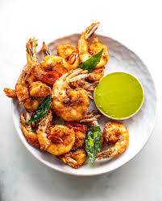

Prawns Fry
Home

Description
Prawns fry is a delicious seafood dish made by marinating prawns with spices and shallow frying them until golden and crispy
Its flavorful, easy to prepare, and often served as a starter or side dish.
Ingredients
- 500g prawns, cleaned and deveined
- 2 tablespoons red chili powder
- 1 teaspoon turmeric powder
- 1 teaspoon garam masala
- 2 tablespoons lemon juice
- Salt to taste
- 2 tablespoons rice flour (optional, for extra crispiness)
- Oil for shallow frying
Steps
- In a bowl, mix red chili powder, turmeric powder, garam masala, lemon juice, and salt to create a marinade.
- Add the cleaned prawns to the marinade and let them sit for at least 30 minutes.
- If using, sprinkle rice flour over the marinated prawns for extra crispiness.
- Heat oil in a pan over medium heat.
- Once the oil is hot, add the marinated prawns in batches, ensuring not to overcrowd the pan.
- Fry the prawns for about 2-3 minutes on each side, or until they turn golden brown and crispy.
- Remove the prawns from the pan and drain them on paper towels to remove excess oil.
- Serve hot with lemon wedges and your choice of dipping sauce.